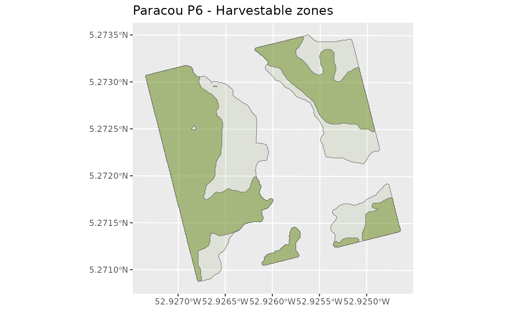

Harvestable zones definition within the plot
Source:R/HarvestableAreaDefinition.R
harvestableareadefinition.RdThe simulator avoids the water sources buffer zones and slopes inaccessible to machinery by taking the highest maximum slope percentage tolerated by the machines.
Usage
harvestableareadefinition(
topography,
creekverticaldistance,
creekhorizontaldistance,
maintrails,
plotmask,
scenario,
winching = NULL,
advancedloggingparameters = loggingparameters()
)Arguments
- topography
Digital terrain model (DTM) of the inventoried plot (LiDAR or SRTM) (
DTMParacou) (RasterLayer with a crs in UTM)- creekverticaldistance
Relative vertical distance (1 m resolution) from nearest channel network (RasterLayer with a crs in UTM) (See
CreekDistances) To generate creek distances:CreekDistancesin 'Articles'.- creekhorizontaldistance
Relative horizontal distance (1 m resolution) from nearest channel network (RasterLayer with a crs in UTM) (See
CreekDistances) To generate creek distances:CreekDistancesin 'Articles'.- maintrails
Main trails defined at the entire harvestable area (sf linestring with a crs in UTM)
- plotmask
Inventoried plot mask (SpatialPolygonsDataFrame with a crs in UTM)
- scenario
Logging scenario among: "RIL1", "RIL2broken", "RIL2", "RIL3", "RIL3fuel", "RIL3fuelhollow" or "manual"(character) (see the vignette)
- winching
"0": no cable or grapple (trail to tree foot) "1": only cable (default = 40m) "2": grapple (default = 6m) + cable (grapple priority) If grapple + cable (winching = "2") without fuel wood (fuel = "0") recovery of the tree foot with grapple if possible (respected grapple conditions) otherwise with cable with angle to the trail. Avoidance of future/reserves if chosen.
- advancedloggingparameters
Other parameters of the logging simulator
loggingparameters(list)
Value
A list with:
'HarvestablePolygons': a collection of polygons (sfc_MULTIPOLYGON, with crs) defined as: 1 : harvestable zone, 0 : non-harvestable zone
'PlotSlope': Slopes of the plot (in radians) characteristic of the studied plot (Large RasterLayer with crs)
HarvestableArea : the harvestable area in hectares (double)
MachinePolygons : a collection of polygons (sf (sfc_POLYGON with crs)) defined as: 1 : accessible machine zone, 0 : non-accessible machine zone
Examples
if (FALSE) {
data(PlotMask)
data(DTMParacou)
data(CreekDistances)
data(MainTrails)
HarvestableAreaOutputsCable <- harvestableareadefinition(
topography = DTMParacou,
creekverticaldistance = CreekDistances$distvert,
creekhorizontaldistance = CreekDistances$disthorz,
maintrails = MainTrails,
plotmask = PlotMask,
scenario = "manual", winching = "1",
advancedloggingparameters = loggingparameters()
)
}
data(HarvestableAreaOutputsCable)
library(ggplot2)
library(sf)
#> Linking to GEOS 3.10.2, GDAL 3.4.1, PROJ 8.2.1; sf_use_s2() is TRUE
ggplot() +
# Harvestable zones
geom_sf(data = HarvestableAreaOutputsCable$HarvestablePolygons,
fill = "olivedrab", alpha = 0.1) +
geom_sf(data = HarvestableAreaOutputsCable$MachinePolygons,
fill = "olivedrab", alpha = 0.5) +
labs(alpha = "Harvestable") +
labs(title = "Paracou P6 - Harvestable zones") +
scale_colour_manual(values = c("Harvestable area" = "olivedrab"))

HarvestableAreaOutputsCable$PlotSlope
#> class : RasterLayer
#> dimensions : 303, 301, 91203 (nrow, ncol, ncell)
#> resolution : 1, 1 (x, y)
#> extent : 286395.5, 286696.5, 582936, 583239 (xmin, xmax, ymin, ymax)
#> crs : +proj=utm +zone=22 +datum=WGS84 +units=m +no_defs
#> source : memory
#> names : slope
#> values : 0.001356512, 0.5775929 (min, max)
#>